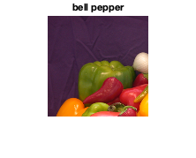
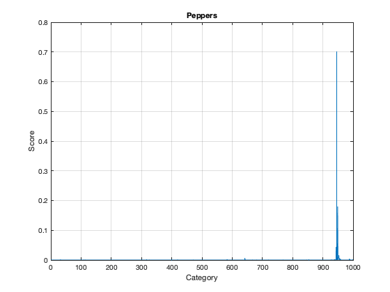
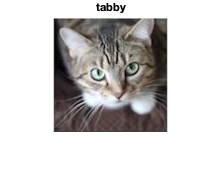
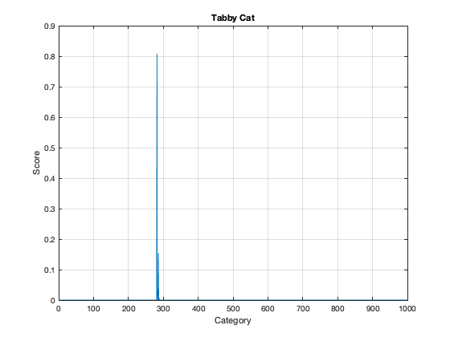
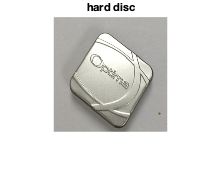
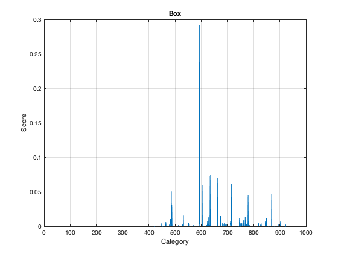

Demo of classifying images with pre-trained networks
alexnet is a pretrained convolutional neural network that is available as an Add-On to the Deep Learning toolbox. It has 1000 object categories. You must install alexnet from the Add-Ons for this demo.
Contents
See also
alexnet, classify, imshow
Load the network
Access the trained model. This is a SeriesNetwork.
net = alexnet;
net
% See details of the architecture
net.Layers
net =
SeriesNetwork with properties:
Layers: [25×1 nnet.cnn.layer.Layer]
InputNames: {'data'}
OutputNames: {'output'}
ans =
25×1 Layer array with layers:
1 'data' Image Input 227×227×3 images with 'zerocenter' normalization
2 'conv1' Convolution 96 11×11×3 convolutions with stride [4 4] and padding [0 0 0 0]
3 'relu1' ReLU ReLU
4 'norm1' Cross Channel Normalization cross channel normalization with 5 channels per element
5 'pool1' Max Pooling 3×3 max pooling with stride [2 2] and padding [0 0 0 0]
6 'conv2' Grouped Convolution 2 groups of 128 5×5×48 convolutions with stride [1 1] and padding [2 2 2 2]
7 'relu2' ReLU ReLU
8 'norm2' Cross Channel Normalization cross channel normalization with 5 channels per element
9 'pool2' Max Pooling 3×3 max pooling with stride [2 2] and padding [0 0 0 0]
10 'conv3' Convolution 384 3×3×256 convolutions with stride [1 1] and padding [1 1 1 1]
11 'relu3' ReLU ReLU
12 'conv4' Grouped Convolution 2 groups of 192 3×3×192 convolutions with stride [1 1] and padding [1 1 1 1]
13 'relu4' ReLU ReLU
14 'conv5' Grouped Convolution 2 groups of 128 3×3×192 convolutions with stride [1 1] and padding [1 1 1 1]
15 'relu5' ReLU ReLU
16 'pool5' Max Pooling 3×3 max pooling with stride [2 2] and padding [0 0 0 0]
17 'fc6' Fully Connected 4096 fully connected layer
18 'relu6' ReLU ReLU
19 'drop6' Dropout 50% dropout
20 'fc7' Fully Connected 4096 fully connected layer
21 'relu7' ReLU ReLU
22 'drop7' Dropout 50% dropout
23 'fc8' Fully Connected 1000 fully connected layer
24 'prob' Softmax softmax
25 'output' Classification Output crossentropyex with 'tench' and 999 other classes
Load a test image and classify it
Read the image to classify
I = imread('peppers.png'); % ships with MATLAB % Adjust size of the image to the net's input layer sz = net.Layers(1).InputSize; I = I(1:sz(1),1:sz(2),1:sz(3)); % Classify the image using AlexNet [label, scorePeppers] = classify(net, I); % Show the image and the classification results NewFigure('Pepper'); ax = gca; imshow(I); title(ax,label); PlotSet(1:length(scorePeppers),scorePeppers,'x label','Category',... 'y label','Score','plot title','Peppers'); % What other categories are similar? disp('Categories with highest scores for Peppers:') kPos = find(scorePeppers>0.01); [vals,kSort] = sort(scorePeppers(kPos),'descend'); for k = 1:length(kSort) fprintf('%13s:\t%g\n',net.Layers(end).Classes(kPos(kSort(k))),vals(k)); end
Categories with highest scores for Peppers:
bell pepper: 0.700013
Granny Smith: 0.180637
cucumber: 0.0435252
fig: 0.0144056
lemon: 0.0100655
  Try the cat
Adjust size of the image
I0 = imread('Cat.png'); % included with this textbook I = imresize(I0,[227 227]); % Classify the image [label, scoreCat] = classify(net, I); % Show the image and the classification results NewFigure('Tabby Cat'); ax = gca; imshow(I) title(ax,label); PlotSet(1:length(scoreCat),scoreCat,'x label','Category','y label','Score',... 'plot title','Tabby Cat'); % What other categories are similar? disp('Categories with highest scores for Cat:') kPos = find(scoreCat>0.01); [vals,kSort] = sort(scoreCat(kPos),'descend'); for k = 1:length(kSort) fprintf('%20s:\t%g\n',net.Layers(end).Classes(kPos(kSort(k))),vals(k)); end
Categories with highest scores for Cat:
tabby: 0.805645
Egyptian cat: 0.15372
tiger cat: 0.0338046
  Next test a picture of a box - this one is hard
This shiny metal box gets identified as a 'hard disc'
% Read and adjust size of the image I0 = imread('Box.jpg'); % included with this textbook I = imresize(I0,[227 227]); % Classify the image [label, scoreBox] = classify(net, I); % Show the image and the classification results NewFigure('Box'); ax = gca; imshow(I); title(ax,label); PlotSet(1:length(scoreBox),scoreBox,'x label','Category','y label','Score',... 'plot title','Box'); % What other categories are similar? disp('Categories with highest scores for Box:') kPos = find(scoreBox>0.05); [vals,kSort] = sort(scoreBox(kPos),'descend'); for k = 1:length(kSort) fprintf('%13s:\t%g\n',net.Layers(end).Classes(kPos(kSort(k))),vals(k)); end
Categories with highest scores for Box:
hard disc: 0.291532
loupe: 0.0731846
modem: 0.0702889
pick: 0.0610286
iPod: 0.0595868
CD player: 0.0508571
  A summary
disp('AlexNet results summary:') fprintf('\nPepper %12.4f\nCat %12.4f\nBox %12.4f\n\n',... max(scorePeppers),max(scoreCat),max(scoreBox));
AlexNet results summary: Pepper 0.7000 Cat 0.8056 Box 0.2915
Copyright
Copyright (c) 2019 Princeton Satellite Systems, Inc. All rights reserved.